| Previous Section | Next Section | Index | Questions | Search the Text |
The sample program used for this example adds the contents of the bytes at locations $1000 and $1001, subtracts one, and stores the result in location $1002. It is assumed that these addresses are of RAM memory. The program starts at location $2000. The first instruction, which has the name LDAA, loads accumulator A from a memory location. The memory location is specified by a 2 byte address which is an instruction operand. The LDAA instruction is therefore 3 bytes long. The second instruction, ADDA, adds the contents of a memory location to the accumulator. It has the same format as the LDAA instruction, and is three bytes long. The third instruction, DECA, decrements the contents of the accumulator and is a single byte instruction. The final instruction, STAA, stores the contents of accumulator A into a memory location. Again the instruction is three bytes long, including the two byte address. The order of the operand bytes in the instruction is high order byte first. This is called big-endian, and is the common order for Freescale processors. Intel processors have the least significant byte first, called little-endian. Here are the contents of the RAM memory starting at location $1000:
| Address | Contents |
|---|---|
| $1000 | $25 |
| $1001 | $37 |
| $1002 | (unknown) |
We will initialize the contents of the first two locations so that we will be adding the values $25 and $37. Since the result will be stored into location $1002, we don't care about the value initially there. Upon completion, the value should be $25 + $37 - 1 = $5B. The program is stored in memory, which could be ROM memory, starting at location $2000:
| Location | Contents | Instruction |
|---|---|---|
| $2000 | $B6 | LDAA $1000 |
| $2001 | $10 | |
| $2002 | $00 | |
| $2003 | $BB | ADDA $1001 |
| $2004 | $10 | |
| $2005 | $01 | |
| $2006 | $43 | DECA |
| $2007 | $7A | STAA $1002 |
| $2008 | $10 | |
| $2009 | $02 |
When we start execution, the PC register contains the starting address of the program, $2000, and the other registers contain values we don't care about (shown here as 0):
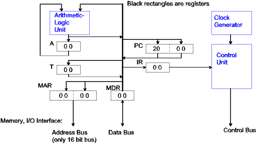
To perform the instruction fetch portion of the instruction cycle, the contents of PC is copied to the MAR (1), the contents of the memory location specified in the MAR, namely location $2000 are read and latched into the MDR (2). The contents of the MDR are copied into the IR (3), and the PC is incremented (4). At this point we have:
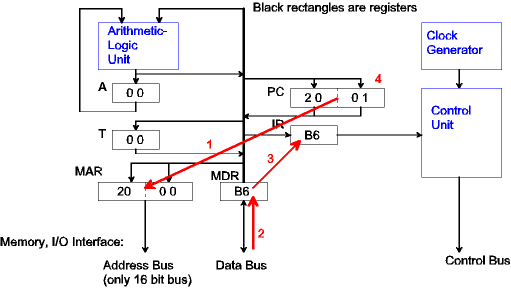
The control unit now decodes the instruction in the Instruction Register and recognizes the LDAA (load accumulator A from memory) instruction. This instruction has a two byte operand, the effective address of the memory location containing the data to load. The goal is to fetch these two operand bytes and place them in the MAR to eventually fetch the operation data. Again, the PC is copied to the MAR (5) and the contents of the next instruction byte are read and latched into the MDR (6). The contents of the MDR are copied into register T (7), and the PC is incremented (8). The instruction decode is now half completed.
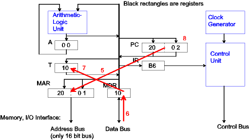
The PC is copied to the MAR (9), the contents of the final operand byte are latched into the MDR (10), the contents of the MDR are copied into the low order byte of the MAR (11), the contents of register T are copied into the high order byte of the MAR (12), and the PC is incremented (13).
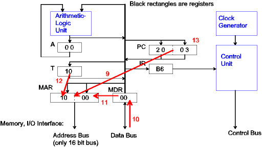
At this point the processor is ready to enter the instruction execution phase, which is to load the accumulator from the memory byte at the effective address. The effective address is already in the MAR, so the data from memory location $1000 is latched into the MDR (14), then is copied to the accumulator A (15). The block diagram does not show a direct path from the MDR to A, however the data can travel through the ALU which is configured to pass through, unaltered, the data on its right-hand input. The execution of the LDAA instruction is complete.
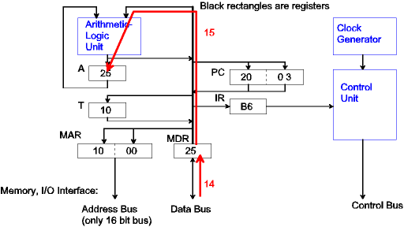
The instruction fetch phase for every instruction is the same. After fetching the first byte of the ADDA instruction we have:
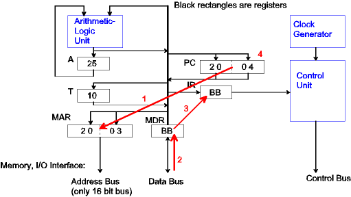
The Control Unit recognized $BB as the ADDA instruction, and fetches the two byte operand, just as it did with the LDAA instruction. After the two bytes are fetched and the PC has been incremented, we get:
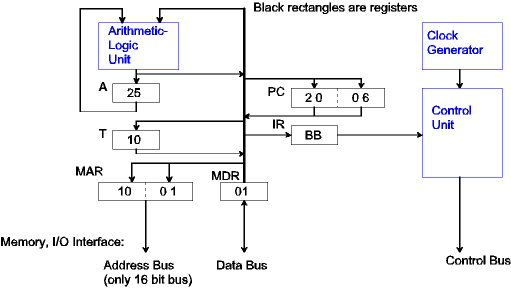
At this point the processor is ready to enter the instruction execution phase, which is to add the memory byte at the effective address to the accumulator. The effective address is already in the MAR, so the data from memory location $1001 is latched into the MDR (14), then is added to the accumulator A (15). The ALU is configured to add its two inputs together. The execution of the ADDA instruction is complete.
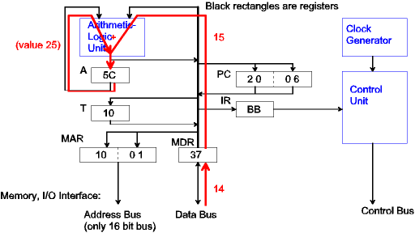
After the instruction fetch phase of the third instruction at $2006, we get:
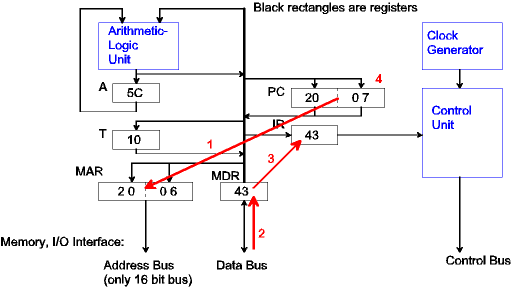
The Control Unit recognizes opcode $43 as the DECA instruction, which has no operands. No action takes place during the instruction decode phase. In the final instruction execution phase, the contents of the accumulator are decremented using the ALU.
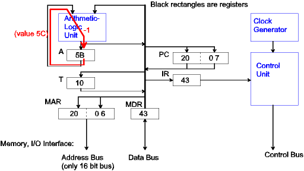
Again the instruction fetch phase fetches the opcode byte of the next instruction, which is the STAA instruction.
As was the case with the LDAA and ADDA instructions, the STAA instruction has a two byte operand, the effective address to store the contents of accumulator A. These two bytes are fetched from memory, placed in the MAR, and the PC is incremented by two.
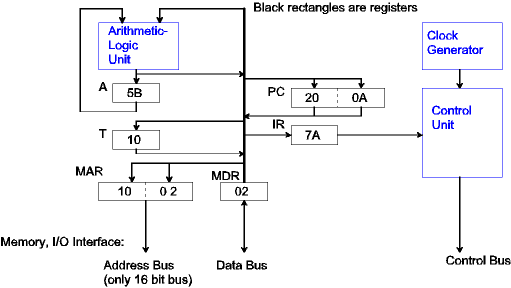
To store the contents of the accumulator A into memory, the data in accumulator A is first transferred to the MDR (14). In this example system design, the only path is through the ALU, which is set to pass through the data on the left input. Then the control unit signals a memory write operation, so the value $5B is stored in location $1002.
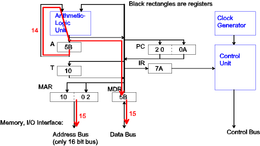
At this point the example program execution is completed. But this is just an example system design. What about the 68HC12? That's next!
Continue with 68HC12 CPU Specifics
Return to the Index.